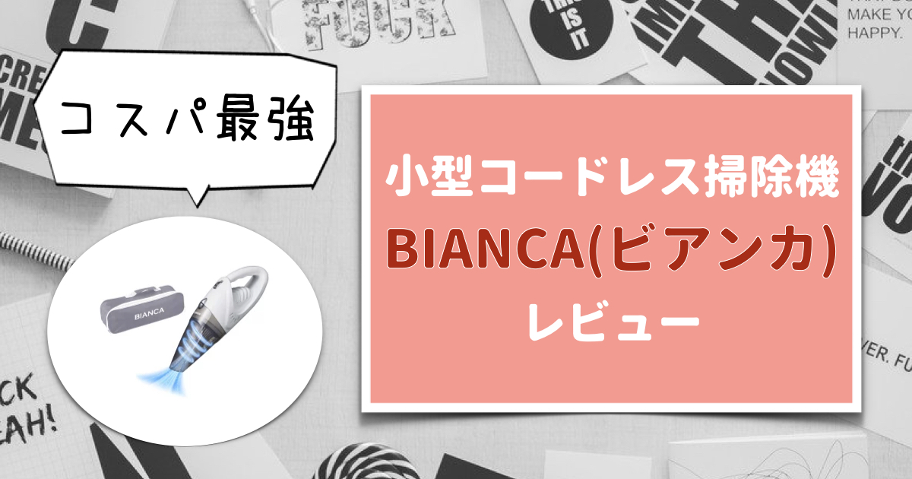
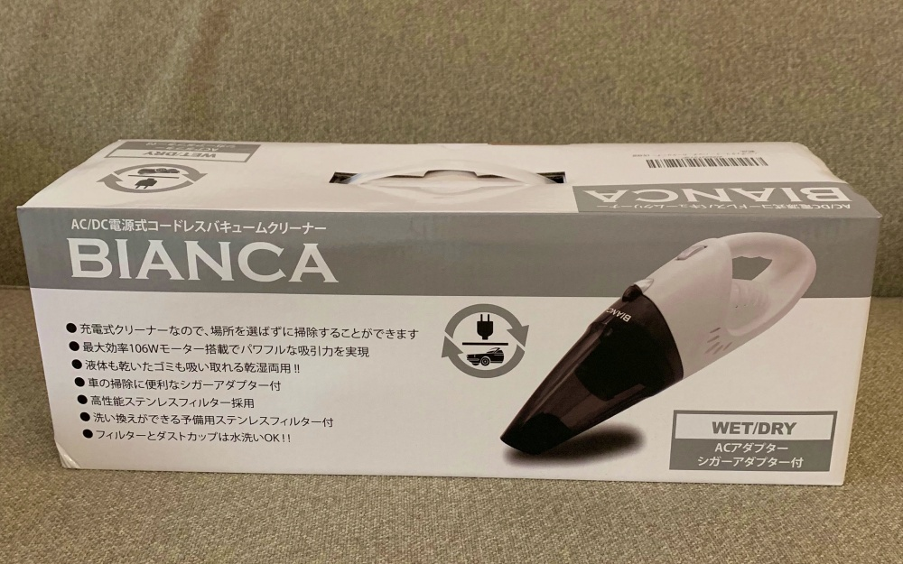
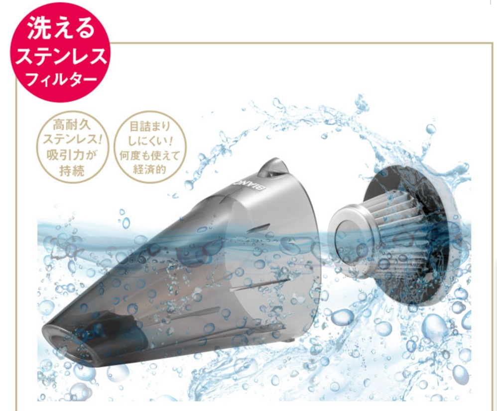
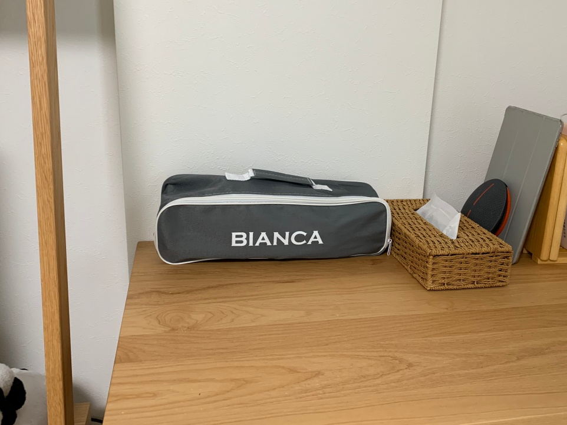
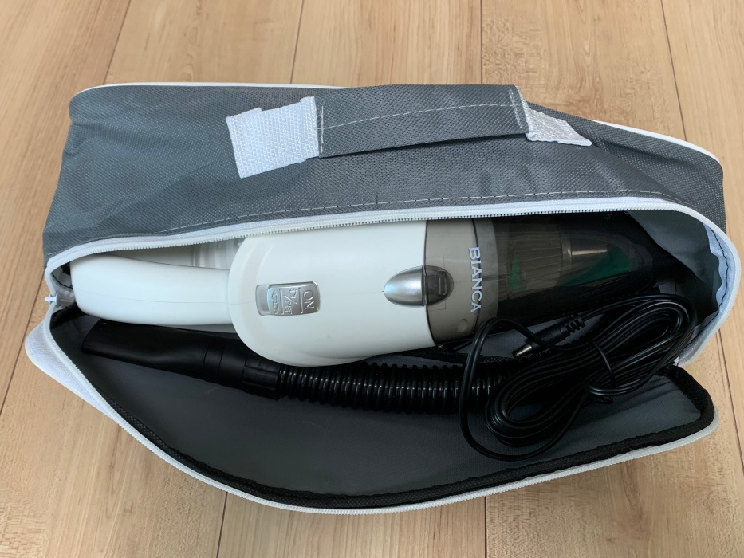
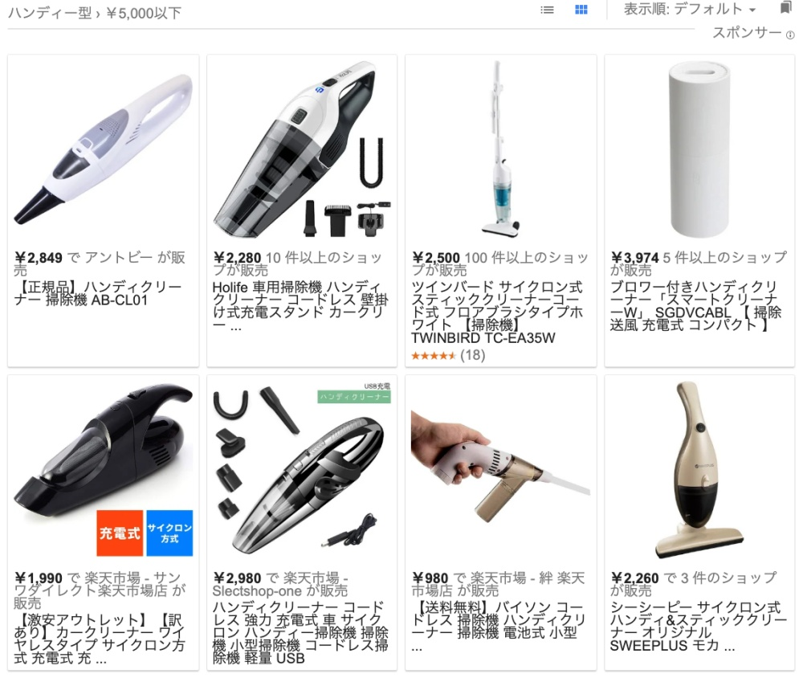
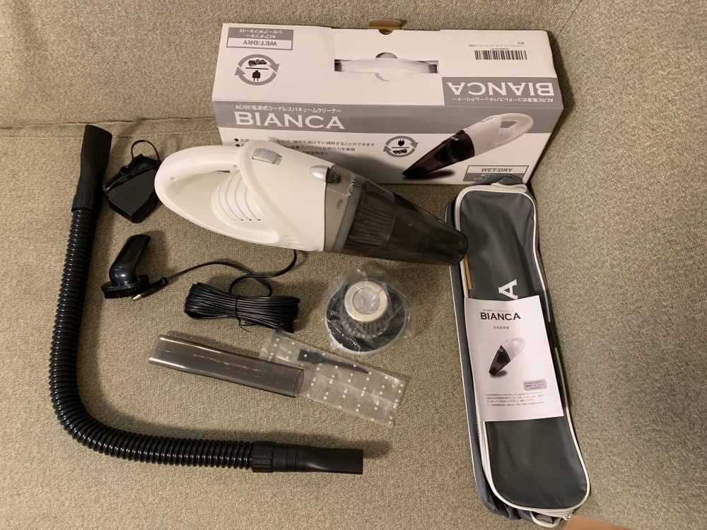

<!DOCTYPE html>
<html>
<head><meta name="generator" content="Hexo 3.9.0">
  <meta charset="utf-8">
  
<!-- Google Analytics -->
<script type="text/javascript">
(function(i,s,o,g,r,a,m){i['GoogleAnalyticsObject']=r;i[r]=i[r]||function(){
(i[r].q=i[r].q||[]).push(arguments)},i[r].l=1*new Date();a=s.createElement(o),
m=s.getElementsByTagName(o)[0];a.async=1;a.src=g;m.parentNode.insertBefore(a,m)
})(window,document,'script','//www.google-analytics.com/analytics.js','ga');

ga('create', 'UA-2714410-4', 'auto');
ga('require', 'linkid', 'linkid.js');
ga('send', 'pageview');

</script>
<!-- End Google Analytics -->


  
  <title>【コスパ最強】コードレス掃除機BIANCAを使用した感想 | 共働き夫婦の楽らくライフ</title>
  <meta name="viewport" content="width=device-width, initial-scale=1, maximum-scale=1">
  
    <meta name="description" content="2019年6月にコードレス掃除機BIANCA（ビアンカ）が発売されました。 この記事ではBIANCA（ビアンカ）を購入しようか考えている方や、コスパの良いコードレス掃除機が欲しいと思っている方に向けて、メリットとデメリットをお伝えしたいと思います。 さらに、私が実際にBIANCA（ビアンカ）を購入して1週間ほど利用してみた使用感も併せて紹介したいと思います。">
<meta name="keywords" content="ビアンカ,BIANCA,コードレス掃除機,ハンディークリーナー,コスパ最強,レビュー">
<meta property="og:type" content="article">
<meta property="og:title" content="【コスパ最強】コードレス掃除機BIANCAを使用した感想">
<meta property="og:url" content="https://tomoraku-life.com/review-BIANCA/index.html">
<meta property="og:site_name" content="共働き夫婦の楽らくライフ">
<meta property="og:description" content="2019年6月にコードレス掃除機BIANCA（ビアンカ）が発売されました。 この記事ではBIANCA（ビアンカ）を購入しようか考えている方や、コスパの良いコードレス掃除機が欲しいと思っている方に向けて、メリットとデメリットをお伝えしたいと思います。 さらに、私が実際にBIANCA（ビアンカ）を購入して1週間ほど利用してみた使用感も併せて紹介したいと思います。">
<meta property="og:locale" content="ja">
<meta property="og:image" content="https://tomoraku-life.com/review-BIANCA/thumnail_eyecatch.004.jpeg">
<meta property="og:updated_time" content="2019-07-25T15:00:00.000Z">
<meta name="twitter:card" content="summary_large_image">
<meta name="twitter:title" content="【コスパ最強】コードレス掃除機BIANCAを使用した感想">
<meta name="twitter:description" content="2019年6月にコードレス掃除機BIANCA（ビアンカ）が発売されました。 この記事ではBIANCA（ビアンカ）を購入しようか考えている方や、コスパの良いコードレス掃除機が欲しいと思っている方に向けて、メリットとデメリットをお伝えしたいと思います。 さらに、私が実際にBIANCA（ビアンカ）を購入して1週間ほど利用してみた使用感も併せて紹介したいと思います。">
<meta name="twitter:image" content="https://tomoraku-life.com/review-BIANCA/thumnail_eyecatch.004.jpeg">
<meta name="twitter:creator" content="@tomoraku_life">
  
  
    <link rel="alternate" href="/atom.xml" title="共働き夫婦の楽らくライフ" type="application/atom+xml">
  
  
    <link rel="icon" href="/images/favicon.ico">
  
  
    <link href="//fonts.googleapis.com/css?family=Source+Code+Pro" rel="stylesheet" type="text/css">
  
  <link rel="stylesheet" href="/css/style.css">
  <link href="https://fonts.googleapis.com/css?family=Concert+One" rel="stylesheet">
  <link rel="stylesheet" href="https://use.fontawesome.com/releases/v5.7.0/css/all.css">
  <script src="https://ajax.googleapis.com/ajax/libs/jquery/3.3.1/jquery.min.js"></script>
  <script src="/js/custom.js"></script>

  <script async src="//pagead2.googlesyndication.com/pagead/js/adsbygoogle.js"></script>
  <script>
     (adsbygoogle = window.adsbygoogle || []).push({
          google_ad_client: "ca-pub-7705145221063766",
          enable_page_level_ads: true
     });
  </script>
</head>
</html>
<body>
  <div id="container">
    <div id="wrap">
      <header id="header">
  <div id="banner"></div>
  <div id="header-outer" class="outer">
    <div id="header-title" class="inner">
      <h1 id="logo-wrap">
        <!--<a href="/" id="logo">共働き夫婦の楽らくライフ</a>-->
        <a href="/" id="logo"></a>
      </h1>
      
        <h2 id="subtitle-wrap">
          <a href="/" id="subtitle">現代を生きる多忙な共働き世帯が、いかに楽して楽しく生活できるかを考えるブログです</a>
        </h2>
      
    </div>
    <div id="header-inner" class="inner">
      <nav id="main-nav">
        
          <a class="main-nav-link" href="/categories/育休パパの経験談/">育休パパの経験談</a>
        
          <a class="main-nav-link" href="/categories/株主優待生活/">株主優待生活</a>
        
          <a class="main-nav-link" href="/categories/資産運用/">資産運用</a>
        
          <a class="main-nav-link" href="/categories/マイホーム/">マイホーム</a>
        
          <a class="main-nav-link" href="/about-this-page">プロフィール</a>
        
      </nav>
      <nav id="sub-nav">
        
          <a id="nav-rss-link" class="nav-icon" href="/atom.xml" title="RSSフィード"></a>
        
        <a id="nav-search-btn" class="nav-icon" title="検索"></a>
      </nav>
      <div id="search-form-wrap">
        <form action="//google.com/search" method="get" accept-charset="UTF-8" class="search-form"><input type="search" name="q" class="search-form-input" placeholder="Search"><button type="submit" class="search-form-submit">&#xF002;</button><input type="hidden" name="sitesearch" value="https://tomoraku-life.com"></form>
      </div>
    </div>
  </div>
</header>
      <div class="outer">
        <section id="main"><article id="post-review-BIANCA" class="article article-type-post" itemscope itemprop="blogPost">

  <div class="article-inner">
    
    
      <header class="article-header">
        
  

    <ul class="breadcrumb">
        <li itemscope="itemscope" itemtype="http://data-vocabulary.org/Breadcrumb">
        <a href="/" itemprop="url">
         <span itemprop="title">ホーム</span>
        </a>
        </li>
        <li itemscope="itemscope" itemtype="http://data-vocabulary.org/Breadcrumb">
        <a href="/categories/マイホーム" itemprop="url">
         <span itemprop="title">マイホーム</span>
        </a>
        </li>
        <li itemscope="itemscope" itemtype="http://data-vocabulary.org/Breadcrumb">
        <a href="" itemprop="url">
         <span itemprop="title"></span>
        </a>
        </li>
    </ul>

    <h1 class="article-title" itemprop="name">
      【コスパ最強】コードレス掃除機BIANCAを使用した感想
    </h1>

    <div class="article-date">
        <time datetime="2019-07-25T15:00:00.000Z" itemprop="datePublished" class="published">2019.07.26</time>
        
          <time datetime="2019-07-25T15:00:00.000Z" itemprop="dateModified" class="modified">2019.07.26</time>
        
    </div>
    
    

      </header>
    

    
      <div class="sns_buttons">
    
<ul class="shareList">
  <li class="shareList__item"><a class="shareList__link icon-twitter" href="https://twitter.com/intent/tweet?text=【コスパ最強】コードレス掃除機BIANCAを使用した感想 https://tomoraku-life.com/review-BIANCA/index.html" onClick="window.open(encodeURI(decodeURI(this.href)),'twwindow','width=550, height=450, personalbar=0, toolbar=0, scrollbars=1'); return false;" target="_blank" title="Twitter"></a></li>
  <li class="shareList__item"><a class="shareList__link icon-facebook" href="http://www.facebook.com/share.php?u=https://tomoraku-life.com/review-BIANCA/index.html" onClick="window.open(encodeURI(decodeURI(this.href)),'fbwindow','width=550, height=450, personalbar=0, toolbar=0, scrollbars=1'); return false;" target="_blank" title="Facebook"></a></li>
  <li class="shareList__item"><a class="shareList__link icon-hatebu" href="http://b.hatena.ne.jp/add?mode=confirm&url=https://tomoraku-life.com/review-BIANCA/index.html&title=【コスパ最強】コードレス掃除機BIANCAを使用した感想" target="_blank" title="はてなブックマーク"></a></li>
  <li class="shareList__item"><a class="shareList__link icon-line" href="http://line.me/R/msg/text?【コスパ最強】コードレス掃除機BIANCAを使用した感想 https://tomoraku-life.com/review-BIANCA/index.html" target="_blank" title="LINE"></a></li>
</ul>
</div>

    

    <div class="article-entry" itemprop="articleBody">
      
        

<p>2019年6月にコードレス掃除機<a href="https://hb.afl.rakuten.co.jp/hgc/18e777b0.663c1253.18e777b1.8e848b4c/?pc=https%3A%2F%2Fitem.rakuten.co.jp%2Fgbt-dko%2Fx27922%2F&m=http%3A%2F%2Fm.rakuten.co.jp%2Fgbt-dko%2Fi%2F10061825%2F&link_type=text&ut=eyJwYWdlIjoiaXRlbSIsInR5cGUiOiJ0ZXh0Iiwic2l6ZSI6IjI0MHgyNDAiLCJuYW0iOjEsIm5hbXAiOiJkb3duIiwiY29tIjowLCJjb21wIjoiZG93biIsInByaWNlIjowLCJib3IiOjEsImNvbCI6MSwiYmJ0biI6MH0%3D" target="_blank" rel="noopener">BIANCA（ビアンカ）</a>が発売されました。</p>
<p>この記事では<a href="https://hb.afl.rakuten.co.jp/hgc/18e777b0.663c1253.18e777b1.8e848b4c/?pc=https%3A%2F%2Fitem.rakuten.co.jp%2Fgbt-dko%2Fx27922%2F&m=http%3A%2F%2Fm.rakuten.co.jp%2Fgbt-dko%2Fi%2F10061825%2F&link_type=text&ut=eyJwYWdlIjoiaXRlbSIsInR5cGUiOiJ0ZXh0Iiwic2l6ZSI6IjI0MHgyNDAiLCJuYW0iOjEsIm5hbXAiOiJkb3duIiwiY29tIjowLCJjb21wIjoiZG93biIsInByaWNlIjowLCJib3IiOjEsImNvbCI6MSwiYmJ0biI6MH0%3D" target="_blank" rel="noopener">BIANCA（ビアンカ）</a>を購入しようか考えている方や、コスパの良いコードレス掃除機が欲しいと思っている方に向けて、メリットとデメリットをお伝えしたいと思います。</p>
<p>さらに、私が実際に<a href="https://hb.afl.rakuten.co.jp/hgc/18e777b0.663c1253.18e777b1.8e848b4c/?pc=https%3A%2F%2Fitem.rakuten.co.jp%2Fgbt-dko%2Fx27922%2F&m=http%3A%2F%2Fm.rakuten.co.jp%2Fgbt-dko%2Fi%2F10061825%2F&link_type=text&ut=eyJwYWdlIjoiaXRlbSIsInR5cGUiOiJ0ZXh0Iiwic2l6ZSI6IjI0MHgyNDAiLCJuYW0iOjEsIm5hbXAiOiJkb3duIiwiY29tIjowLCJjb21wIjoiZG93biIsInByaWNlIjowLCJib3IiOjEsImNvbCI6MSwiYmJ0biI6MH0%3D" target="_blank" rel="noopener">BIANCA（ビアンカ）</a>を購入して1週間ほど利用してみた使用感も併せて紹介したいと思います。</p>
<a id="more"></a>

<div class="toc">

<!-- toc -->

<ul>
<li><a href="#kosupazui-qiang-nokodoresusao-chu-ji-biancawoshi-yong-sitagan-xiang">コスパ最強のコードレス掃除機BIANCAを使用した感想</a><ul>
<li><a href="#merituto-konpakutonage-nixi-yin-li-gaqiang-i">メリット①：コンパクトな割に吸引力が強い</a></li>
<li><a href="#merituto-huirutawoshui-xi-idekirutamementenansujian-dan">メリット②：フィルターを水洗いできるためメンテナンス簡単</a></li>
<li><a href="#merituto-xiao-sa-luo-tabatugugatuiteorishou-na-siyasui">メリット③：小洒落たバッグがついており収納しやすい</a></li>
<li><a href="#demerituto-xiao-xing-nanodeguang-fan-wei-nosao-chu-nihaxiang-kanai">デメリット①：小型なので広範囲の掃除には向かない</a></li>
<li><a href="#demerituto-motutojia-ge-noan-izhi-pin-ari">デメリット②：もっと価格の安い製品あり</a></li>
<li><a href="#fu-shu-pin">付属品</a></li>
</ul>
</li>
<li><a href="#gou-ru-fang-fa">購入方法</a></li>
<li><a href="#matome">まとめ</a></li>
</ul>
<!-- tocstop -->

</div>

<h2><span id="kosupazui-qiang-nokodoresusao-chu-ji-biancawoshi-yong-sitagan-xiang">コスパ最強のコードレス掃除機BIANCAを使用した感想</span><a href="#kosupazui-qiang-nokodoresusao-chu-ji-biancawoshi-yong-sitagan-xiang" class="header-anchor">#</a></h2><p><span class="image-caption">楽天市場にて5,280円で購入</span></p>
<h3><span id="merituto-konpakutonage-nixi-yin-li-gaqiang-i">メリット①：コンパクトな割に吸引力が強い</span><a href="#merituto-konpakutonage-nixi-yin-li-gaqiang-i" class="header-anchor">#</a></h3><p>他の同じような小型のコードレス掃除機に比べて、なんといっても<a href="https://hb.afl.rakuten.co.jp/hgc/18e777b0.663c1253.18e777b1.8e848b4c/?pc=https%3A%2F%2Fitem.rakuten.co.jp%2Fgbt-dko%2Fx27922%2F&m=http%3A%2F%2Fm.rakuten.co.jp%2Fgbt-dko%2Fi%2F10061825%2F&link_type=text&ut=eyJwYWdlIjoiaXRlbSIsInR5cGUiOiJ0ZXh0Iiwic2l6ZSI6IjI0MHgyNDAiLCJuYW0iOjEsIm5hbXAiOiJkb3duIiwiY29tIjowLCJjb21wIjoiZG93biIsInByaWNlIjowLCJib3IiOjEsImNvbCI6MSwiYmJ0biI6MH0%3D" target="_blank" rel="noopener">BIANCA（ビアンカ）</a>の最大の特長は<strong>ハンディークリーナーとは思えない吸引力</strong>です。</p>
<p>実際にゴミを吸う様は以下の動画の23秒くらいから確認できます。</p>
<div class="video-container"><iframe src="//www.youtube.com/embed/-iV-Hecs5H4" frameborder="0" allowfullscreen></iframe></div>

<p>正直、実際に使うまでこんなに吸ってくれると思いませんでした。子供がフローリングにこぼした食べ物から、カーペットに挟まった髪の毛まで1発で吸い込んでいきます。</p>
<p>また、なんと液体も吸い込める！今、我が家にはコップに入ったお茶をぶちまける長男（1歳半）がいるのでなんともありがたい機能です。</p>
<h3><span id="merituto-huirutawoshui-xi-idekirutamementenansujian-dan">メリット②：フィルターを水洗いできるためメンテナンス簡単</span><a href="#merituto-huirutawoshui-xi-idekirutamementenansujian-dan" class="header-anchor">#</a></h3><p><span class="image-caption">フィルタをごと水洗い可能</span><br>なんと、<a href="https://hb.afl.rakuten.co.jp/hgc/18e777b0.663c1253.18e777b1.8e848b4c/?pc=https%3A%2F%2Fitem.rakuten.co.jp%2Fgbt-dko%2Fx27922%2F&m=http%3A%2F%2Fm.rakuten.co.jp%2Fgbt-dko%2Fi%2F10061825%2F&link_type=text&ut=eyJwYWdlIjoiaXRlbSIsInR5cGUiOiJ0ZXh0Iiwic2l6ZSI6IjI0MHgyNDAiLCJuYW0iOjEsIm5hbXAiOiJkb3duIiwiY29tIjowLCJjb21wIjoiZG93biIsInByaWNlIjowLCJib3IiOjEsImNvbCI6MSwiYmJ0biI6MH0%3D" target="_blank" rel="noopener">BIANCA（ビアンカ）</a>のフィルターは水洗いが可能です。<br><strong>この製品のメンテナンスは定期的に水道で洗うだけで良い</strong>のでメンテナンスが非常に楽チンです。</p>
<p>さらにいうと、水で流すだけのメンテナンスをするだけで長持ち（するはず）なのでコストパフォーマンスの良さをさらに押し上げる要因でもあると言えます。</p>
<h3><span id="merituto-xiao-sa-luo-tabatugugatuiteorishou-na-siyasui">メリット③：小洒落たバッグがついており収納しやすい</span><a href="#merituto-xiao-sa-luo-tabatugugatuiteorishou-na-siyasui" class="header-anchor">#</a></h3><p><span class="image-caption">リビングにそっと置ける</span></p>
<p>写真のとおり、掃除機とは思えない小洒落たバックが付属しています。リビングに置いてあっても違和感のないデザインです。</p>
<p>小型のコードレス掃除機は、<strong>さっとゴミを吸いたいときすぐ手元に欲しい</strong>のでリビングに置けるメリットは大きいです。</p>
<p><span class="image-caption">バッグの中身はこんな感じ</span></p>
<h3><span id="demerituto-xiao-xing-nanodeguang-fan-wei-nosao-chu-nihaxiang-kanai">デメリット①：小型なので広範囲の掃除には向かない</span><a href="#demerituto-xiao-xing-nanodeguang-fan-wei-nosao-chu-nihaxiang-kanai" class="header-anchor">#</a></h3><p>当然といえば当然ですが、ダイソンを始めとしたコードレス掃除機のようにリビング全体などの広範囲の掃除には向きません。</p>
<p>他にメインの掃除機が必要です。メインの掃除機を持っていない場合は、まずはそちらを買いましょう。</p>
<p><a href="https://hb.afl.rakuten.co.jp/hgc/18e777b0.663c1253.18e777b1.8e848b4c/?pc=https%3A%2F%2Fitem.rakuten.co.jp%2Fgbt-dko%2Fx27922%2F&m=http%3A%2F%2Fm.rakuten.co.jp%2Fgbt-dko%2Fi%2F10061825%2F&link_type=text&ut=eyJwYWdlIjoiaXRlbSIsInR5cGUiOiJ0ZXh0Iiwic2l6ZSI6IjI0MHgyNDAiLCJuYW0iOjEsIm5hbXAiOiJkb3duIiwiY29tIjowLCJjb21wIjoiZG93biIsInByaWNlIjowLCJib3IiOjEsImNvbCI6MSwiYmJ0biI6MH0%3D" target="_blank" rel="noopener">BIANCA（ビアンカ）</a>はあくまで<strong>2台目のポジションでのサブ利用</strong>となります。</p>
<h3><span id="demerituto-motutojia-ge-noan-izhi-pin-ari">デメリット②：もっと価格の安い製品あり</span><a href="#demerituto-motutojia-ge-noan-izhi-pin-ari" class="header-anchor">#</a></h3><p><span class="image-caption">同様な小型コードレス掃除機の製品</span></p>
<p>私は<a href="https://hb.afl.rakuten.co.jp/hgc/18e777b0.663c1253.18e777b1.8e848b4c/?pc=https%3A%2F%2Fitem.rakuten.co.jp%2Fgbt-dko%2Fx27922%2F&m=http%3A%2F%2Fm.rakuten.co.jp%2Fgbt-dko%2Fi%2F10061825%2F&link_type=text&ut=eyJwYWdlIjoiaXRlbSIsInR5cGUiOiJ0ZXh0Iiwic2l6ZSI6IjI0MHgyNDAiLCJuYW0iOjEsIm5hbXAiOiJkb3duIiwiY29tIjowLCJjb21wIjoiZG93biIsInByaWNlIjowLCJib3IiOjEsImNvbCI6MSwiYmJ0biI6MH0%3D" target="_blank" rel="noopener">BIANCA（ビアンカ）</a>を5,280円で購入しましたが、これよりも安い製品がいくつか存在します。</p>
<p>私が他の製品を試した訳ではありませんが、製品のレビューをみる限り<strong>一様にして吸引力がイマイチです</strong>。</p>
<p><a href="https://hb.afl.rakuten.co.jp/hgc/18e777b0.663c1253.18e777b1.8e848b4c/?pc=https%3A%2F%2Fitem.rakuten.co.jp%2Fgbt-dko%2Fx27922%2F&m=http%3A%2F%2Fm.rakuten.co.jp%2Fgbt-dko%2Fi%2F10061825%2F&link_type=text&ut=eyJwYWdlIjoiaXRlbSIsInR5cGUiOiJ0ZXh0Iiwic2l6ZSI6IjI0MHgyNDAiLCJuYW0iOjEsIm5hbXAiOiJkb3duIiwiY29tIjowLCJjb21wIjoiZG93biIsInByaWNlIjowLCJib3IiOjEsImNvbCI6MSwiYmJ0biI6MH0%3D" target="_blank" rel="noopener">BIANCA（ビアンカ）</a>はこのサイズの製品では吸引力が最強だと思います。長く使うことを考えると数千円は高くないと思っています。</p>
<h3><span id="fu-shu-pin">付属品</span><a href="#fu-shu-pin" class="header-anchor">#</a></h3><p><span class="image-caption">付属品を箱から出してみました</span></p>
<p>最後に付属品の写真を載せておきます。なんと、<strong>予備のフィルターが付属していました</strong>。メーカーの心意気です。長く利用させていただきます。</p>
<h2><span id="gou-ru-fang-fa">購入方法</span><a href="#gou-ru-fang-fa" class="header-anchor">#</a></h2><p>Amazonには存在しないようですので、楽天市場で購入するのがオススメです。</p>
<p>私も楽天市場から購入しました。ポチってから2日くらいで自宅に到着しましたよ♪</p>
<table border="0" cellpadding="0" cellspacing="0"><tr><td><div style="border:1px solid #95a5a6;border-radius:.75rem;background-color:#FFFFFF;width:250px;margin:0px;padding:5px 0;text-align:center;overflow:hidden;"><a href="https://hb.afl.rakuten.co.jp/hgc/18e777b0.663c1253.18e777b1.8e848b4c/?pc=https%3A%2F%2Fitem.rakuten.co.jp%2Fgbt-dko%2Fx27922%2F&m=http%3A%2F%2Fm.rakuten.co.jp%2Fgbt-dko%2Fi%2F10061825%2F&link_type=picttext&ut=eyJwYWdlIjoiaXRlbSIsInR5cGUiOiJwaWN0dGV4dCIsInNpemUiOiIyNDB4MjQwIiwibmFtIjoxLCJuYW1wIjoiZG93biIsImNvbSI6MCwiY29tcCI6ImRvd24iLCJwcmljZSI6MCwiYm9yIjoxLCJjb2wiOjEsImJidG4iOjB9" target="_blank" rel="nofollow noopener noreferrer" style="word-wrap:break-word;"></a><p style="font-size:12px;line-height:1.4em;text-align:left;margin:0px;padding:2px 6px;word-wrap:break-word"><a href="https://hb.afl.rakuten.co.jp/hgc/18e777b0.663c1253.18e777b1.8e848b4c/?pc=https%3A%2F%2Fitem.rakuten.co.jp%2Fgbt-dko%2Fx27922%2F&m=http%3A%2F%2Fm.rakuten.co.jp%2Fgbt-dko%2Fi%2F10061825%2F&link_type=picttext&ut=eyJwYWdlIjoiaXRlbSIsInR5cGUiOiJwaWN0dGV4dCIsInNpemUiOiIyNDB4MjQwIiwibmFtIjoxLCJuYW1wIjoiZG93biIsImNvbSI6MCwiY29tcCI6ImRvd24iLCJwcmljZSI6MCwiYm9yIjoxLCJjb2wiOjEsImJidG4iOjB9" target="_blank" rel="nofollow noopener noreferrer" style="word-wrap:break-word;">コードレス掃除機 掃除機 コードレス ハンディクリーナー 充電式 ミニ掃除機 車内 クリーナー 軽量 ホワイト サイクロン 紙パック不要 ビアンカ BIANCA 小型 ハンドクリーナー ペット 猫砂 強力 カークリーナー 車載 シガーアダプター 収納バッグ付 車掃除機 ハンディ掃除機</a></p><div style="margin:10px;"><a href="https://hb.afl.rakuten.co.jp/hgc/18e777b0.663c1253.18e777b1.8e848b4c/?pc=https%3A%2F%2Fitem.rakuten.co.jp%2Fgbt-dko%2Fx27922%2F&m=http%3A%2F%2Fm.rakuten.co.jp%2Fgbt-dko%2Fi%2F10061825%2F&link_type=picttext&ut=eyJwYWdlIjoiaXRlbSIsInR5cGUiOiJwaWN0dGV4dCIsInNpemUiOiIyNDB4MjQwIiwibmFtIjoxLCJuYW1wIjoiZG93biIsImNvbSI6MCwiY29tcCI6ImRvd24iLCJwcmljZSI6MCwiYm9yIjoxLCJjb2wiOjEsImJidG4iOjB9" target="_blank" rel="nofollow noopener noreferrer" style="word-wrap:break-word;"></a><a href="https://hb.afl.rakuten.co.jp/hgc/18e777b0.663c1253.18e777b1.8e848b4c/?pc=https%3A%2F%2Fitem.rakuten.co.jp%2Fgbt-dko%2Fx27922%2F%3Fscid%3Daf_pc_bbtn&m=http%3A%2F%2Fm.rakuten.co.jp%2Fgbt-dko%2Fi%2F10061825%2F%3Fscid%3Daf_pc_bbtn&link_type=picttext&ut=eyJwYWdlIjoiaXRlbSIsInR5cGUiOiJwaWN0dGV4dCIsInNpemUiOiIyNDB4MjQwIiwibmFtIjoxLCJuYW1wIjoiZG93biIsImNvbSI6MCwiY29tcCI6ImRvd24iLCJwcmljZSI6MCwiYm9yIjoxLCJjb2wiOjEsImJidG4iOjB9" target="_blank" rel="nofollow noopener noreferrer" style="word-wrap:break-word;"></a></div></div></td></tr></table>

<h2><span id="matome">まとめ</span><a href="#matome" class="header-anchor">#</a></h2><p><a href="https://hb.afl.rakuten.co.jp/hgc/18e777b0.663c1253.18e777b1.8e848b4c/?pc=https%3A%2F%2Fitem.rakuten.co.jp%2Fgbt-dko%2Fx27922%2F&m=http%3A%2F%2Fm.rakuten.co.jp%2Fgbt-dko%2Fi%2F10061825%2F&link_type=text&ut=eyJwYWdlIjoiaXRlbSIsInR5cGUiOiJ0ZXh0Iiwic2l6ZSI6IjI0MHgyNDAiLCJuYW0iOjEsIm5hbXAiOiJkb3duIiwiY29tIjowLCJjb21wIjoiZG93biIsInByaWNlIjowLCJib3IiOjEsImNvbCI6MSwiYmJ0biI6MH0%3D" target="_blank" rel="noopener">BIANCA（ビアンカ）</a>はこんな人にオススメです。</p>
<ul>
<li>すでにメインの掃除機を持っており、ちょい掃除用の2台目サブが欲しい人</li>
<li>商品選びに失敗して吸引力が弱い掃除機を購入してしまい、残念な思いをしたくない人</li>
</ul>
<p>とくにあまり安い掃除機を買ってしまうと「吸引力が弱すぎて使えない」ということが起こりがちなので<strong>失敗したくない人にオススメです</strong>。</p>
<div class="talk"><div class="faceicon"><div class="name">コマ</div></div><div class="chatting"><div class="says">
<p>1週間ほど利用しましたが、とても快適に利用ができています！吸引力の強さは保証します。</p>
</div></div></div>

      
    </div>

    
      <div class="sns_buttons">
    
      この記事が気に入ったら友達にシェアしよう
    
<ul class="shareList">
  <li class="shareList__item"><a class="shareList__link icon-twitter" href="https://twitter.com/intent/tweet?text=【コスパ最強】コードレス掃除機BIANCAを使用した感想 https://tomoraku-life.com/review-BIANCA/index.html" onClick="window.open(encodeURI(decodeURI(this.href)),'twwindow','width=550, height=450, personalbar=0, toolbar=0, scrollbars=1'); return false;" target="_blank" title="Twitter"></a></li>
  <li class="shareList__item"><a class="shareList__link icon-facebook" href="http://www.facebook.com/share.php?u=https://tomoraku-life.com/review-BIANCA/index.html" onClick="window.open(encodeURI(decodeURI(this.href)),'fbwindow','width=550, height=450, personalbar=0, toolbar=0, scrollbars=1'); return false;" target="_blank" title="Facebook"></a></li>
  <li class="shareList__item"><a class="shareList__link icon-hatebu" href="http://b.hatena.ne.jp/add?mode=confirm&url=https://tomoraku-life.com/review-BIANCA/index.html&title=【コスパ最強】コードレス掃除機BIANCAを使用した感想" target="_blank" title="はてなブックマーク"></a></li>
  <li class="shareList__item"><a class="shareList__link icon-line" href="http://line.me/R/msg/text?【コスパ最強】コードレス掃除機BIANCAを使用した感想 https://tomoraku-life.com/review-BIANCA/index.html" target="_blank" title="LINE"></a></li>
</ul>
</div>

    

    <div class="article-entry">
      <!-- Google Adsense -->
      <script async src="https://pagead2.googlesyndication.com/pagead/js/adsbygoogle.js"></script>
      <!-- ディスプレイ(記事の終わり) -->
      <ins class="adsbygoogle"
          style="display:block"
          data-ad-client="ca-pub-7705145221063766"
          data-ad-slot="8691379280"
          data-ad-format="auto"
          data-full-width-responsive="true"></ins>
      <script>
          (adsbygoogle = window.adsbygoogle || []).push({});
      </script>
      <!-- Google Adsense -->
    </div>

    <div class="article-entry">
      <h3>あなたへのオススメ記事</h3>
      <!-- Google Adsense -->
      <script async src="https://pagead2.googlesyndication.com/pagead/js/adsbygoogle.js"></script>
      <ins class="adsbygoogle"
          style="display:block"
          data-ad-format="autorelaxed"
          data-ad-client="ca-pub-7705145221063766"
          data-ad-slot="6224465210"></ins>
      <script>
          (adsbygoogle = window.adsbygoogle || []).push({});
      </script>
      <!-- Google Adsense -->
    </div>

    <footer class="article-footer">
      
    </footer>

  </div>
</article>

</section>
        
          <aside id="sidebar">
  
    <div class="widget-wrap">
  <h3 class="widget-title">自己紹介</h3>
  <div class="widget">
    <div class="profile">
      
      <p>コマ</p>
    </div>
    <p>
      妻と子供２人とマイホームで暮らし、日々「いかに楽して」「いかに楽しく」生活できるかを考えています。
      子供が産まれたタイミングで育休を取得したことで人生が豊かになりました。
    </p>
    <div style="text-align: center;">
      <a href="https://twitter.com/tomoraku_life?ref_src=twsrc%5Etfw" class="twitter-follow-button"
        data-show-count="false">Follow @tomoraku_life</a>
      <script async src="https://platform.twitter.com/widgets.js" charset="utf-8"></script>
    </div>
    <p>
      お問い合わせ・ご連絡はTwitterのDMにてお受けします。
    </p>
  </div>
</div>
  
    <div class="widget-wrap">
  <h3 class="widget-title">当ブログのアピール</h3>
  <div class="widget">
    <p>
      <strong>
        <ol>
          <li>累計80万PV達成！</li>
          <li>Googleアドセンス収益、累計30万円達成！</li>
        </ol>
      </strong>
    </p>
    <p>
      読者のみなさまのおかげです。これからもお役に立てる記事を書いていきますので、どうぞよろしくお願いします！
    </p>
  </div>
</div>
  
    
  <div class="widget-wrap">
    <h3 class="widget-title">カテゴリ</h3>
    <div class="widget">
      <ul class="category-list"><li class="category-list-item"><a class="category-list-link" href="/categories/Apple製品/">Apple製品</a><span class="category-list-count">12</span></li><li class="category-list-item"><a class="category-list-link" href="/categories/ふるさと納税/">ふるさと納税</a><span class="category-list-count">5</span></li><li class="category-list-item"><a class="category-list-link" href="/categories/ブログ運営/">ブログ運営</a><span class="category-list-count">2</span></li><li class="category-list-item"><a class="category-list-link" href="/categories/プログラミング/">プログラミング</a><span class="category-list-count">3</span></li><li class="category-list-item"><a class="category-list-link" href="/categories/マイホーム/">マイホーム</a><span class="category-list-count">13</span></li><li class="category-list-item"><a class="category-list-link" href="/categories/妊活／不妊治療/">妊活／不妊治療</a><span class="category-list-count">4</span></li><li class="category-list-item"><a class="category-list-link" href="/categories/子育て/">子育て</a><span class="category-list-count">5</span></li><li class="category-list-item"><a class="category-list-link" href="/categories/日記/">日記</a><span class="category-list-count">17</span></li><li class="category-list-item"><a class="category-list-link" href="/categories/株主優待生活/">株主優待生活</a><span class="category-list-count">8</span></li><li class="category-list-item"><a class="category-list-link" href="/categories/生活の知恵/">生活の知恵</a><span class="category-list-count">30</span></li><li class="category-list-item"><a class="category-list-link" href="/categories/育休パパの経験談/">育休パパの経験談</a><span class="category-list-count">10</span></li><li class="category-list-item"><a class="category-list-link" href="/categories/読書/">読書</a><span class="category-list-count">1</span></li><li class="category-list-item"><a class="category-list-link" href="/categories/資産運用/">資産運用</a><span class="category-list-count">8</span></li><li class="category-list-item"><a class="category-list-link" href="/categories/音楽/">音楽</a><span class="category-list-count">5</span></li></ul>
    </div>
  </div>


  
</aside>
        
      </div>
      <footer id="footer">
  
  <div class="outer">
    <div id="footer-info" class="inner">
      &copy; 2019 共働き夫婦の楽らくライフ
    </div>
  </div>
</footer>

      <div id="menu">
        <div class="menu-title">
          <a href="/"></a>
        </div>
        <a id="main-nav-toggle" class="nav-icon"></a>
      </div>
      <div id="page_top"><a href="#"></a></div>
    </div>
    <nav id="mobile-nav">
  
    <a href="/categories/育休パパの経験談/" class="mobile-nav-link">育休パパの経験談</a>
  
    <a href="/categories/株主優待生活/" class="mobile-nav-link">株主優待生活</a>
  
    <a href="/categories/資産運用/" class="mobile-nav-link">資産運用</a>
  
    <a href="/categories/マイホーム/" class="mobile-nav-link">マイホーム</a>
  
    <a href="/about-this-page" class="mobile-nav-link">プロフィール</a>
  
</nav>
    

<script src="//ajax.googleapis.com/ajax/libs/jquery/2.0.3/jquery.min.js"></script>


<script src="/js/script.js"></script>


  </div>
</body>
</html>